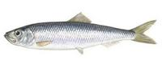
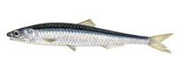

Dalmacija ribolovd.o.o.
Dalmacija ribolovd.o.o.Ulov sitne plave ribe.
Srdela (lat. Sardina Pilchardus, eng. Pilchard, Sardine) spada u najvažniju ribu u ribarstvu Jadranskog mora. Godišnji ulov srdele iznosi skoro 60% od ukupnog ulova morske ribe. U prošlosti je srdela također imala vrlo važnu ulogu u tradicionalnom jelovniku naših starih. Iako je uvijek bila na glasu kao sirotinjska hrana, srdelu su cijenili i bogatiji sladokusci - pogotovo poznatu "slanu srdelu".
Kao riblja vrsta pripada obitelji srdjelki i dosegne duljinu do 24 cm i težinu od 0,08 kg. Srednja lovna težina joj iznosi 0,03 kg (30-35 komada u 1 kg). Ima dobro razvijenu repnu i leđnu peraju. S gornje strane je zelenomaslinaste boje, na bokovima je veliki uzdužni modri pojas, dok je postrance i s donje strane srebrnkastobijele boje.
Rasprostranjena je na skoro čitavom uzobalnom dijelu Jadrana. Iako je dosta jednolično raspoređena, gustoćom naselja odskaču dva lovna područja: srednje i južnodalmatinsko otočje, te sjevernodalmatinsko-kvarnersko područje. Hrani se pretežno danju, i to planktonom i račićima.
Za lov se koriste kružne mreže plivarice, povlačne lebdeće koće, obalne mreže potegače i mreže stajačice. Srdela se može loviti tijekom cijele godine, ali pravi lov počinje u ožujku i traje do konca studenog.
Inćun (lat. Engraulis Encrasicolus, eng. Anchovy) je gospodarski također značajna Jadranska vrsta. U prošlosti nije bila tako tražena kao srdela, ali ulov inćuna raste od vremena kada se počelo loviti na otvorenom moru. Poučeni iskustvom ostalih mediteranskih zemalja, i u nas se pojavio interes za usoljenim i filetiranim inćunima. Velik dio ulovljenih inćuna ide u preradu za izvozno tržište.
Pripada obitelji inćuna, naraste do 20 cm i postiže težinu do 0,05 kg. Tijelo mu je vretenasto i izduženo, a glava zašiljena. Ima velika usta, i donju čeljust vidljivo kraću od gornje. S gornje strane je zelenkasto ili smeđe modre boje, a donja strana je srebrnkastobijele boje.
Rasprostranjen je po cijelom Jadranu do onih područja koja nisu dublja od 300 m. Najčešće se nalazi na područjima s dubinom mora između 30 i 100 m, ali brojniji je u pučinskim područjima gdje dubina ne prelazi 80 m. Najbrojnija staništa su mu pučine srednjeg Jadrana, sjeverno od Jabuke prema Kvarneru. U hladnim mjesecima se drži donjih slojeva, a u toplijim razdobljima se diže prema površini. Hrani se planktonom, i smatra se pravom pelagičnom ribom (pravi stanovnik pučine).
Ribolovni alati kojima se love inćuni su kružne mreže plivarice i povlačne lebdeće koće. Način lova je sličan kao za svu plavu ribu, ali za razliku od ostale plave ribe koju treba brzo zapasati za inćune treba biti strpljiv i loviti sporije. Lovno razdoblje je slično onome za srdelu, počinje krajem ožujka i traje uglavnom do kraja jeseni.
Svoje ime je plavoperajna tuna (lat. Thunnus Thynnus, eng. Bluefin Tuna) dobila još u davno antičko doba kada joj se divio Aristotel. Već je tada fascinirala svojom snagom i brzim plivanjem, te se znalo za njezine duge migracije. Ime bi joj prevedeno sa starogrčkog bilo "žurni lutalica". Još iz tih davnih antičkih vremena postoje zapisi o lovu na tune u Jadranskom moru i o kvaliteti u okusu njihovog mesa.
 Tuna je mesojed koji se primarno hrani sitnom plavom ribom kao što je srdela, inćun, haringa itd. Jedna je od rijetkih endotermnih (toplokrvnih) riba, a za razliku od kopnenih toplokrvnih životinja plavoperajna tuna ne zadržava svoju tjelesnu temperaturu unutar uskog područja, već ona ovisi o temperaturi mora u kojem obitava. To joj omogućuje da migrira između vrlo različitih staništa, od toplih mora poput Sredozemnog, Crnog i Karipskog do obala Norveške ili Labradora na hladnom sjeveru. Osim toga, njezina toplokrvnost omogućuje puno veću snagu i učinkovitost mišića koji joj omogućuju dostizanje velikih brzina i duge migracije u potrazi za hranom. Poznato je da osim što su veliki putnici mogu i zaroniti do dubine od čak 1 000 m.
Tuna je mesojed koji se primarno hrani sitnom plavom ribom kao što je srdela, inćun, haringa itd. Jedna je od rijetkih endotermnih (toplokrvnih) riba, a za razliku od kopnenih toplokrvnih životinja plavoperajna tuna ne zadržava svoju tjelesnu temperaturu unutar uskog područja, već ona ovisi o temperaturi mora u kojem obitava. To joj omogućuje da migrira između vrlo različitih staništa, od toplih mora poput Sredozemnog, Crnog i Karipskog do obala Norveške ili Labradora na hladnom sjeveru. Osim toga, njezina toplokrvnost omogućuje puno veću snagu i učinkovitost mišića koji joj omogućuju dostizanje velikih brzina i duge migracije u potrazi za hranom. Poznato je da osim što su veliki putnici mogu i zaroniti do dubine od čak 1 000 m.
Tijelo im je također odlično prilagođeno plivanju, imaju izrazito hidrodinamično tijelo (čak su ga i projektanti podmornica proučavali), a prema repu imaju nekoliko peraja-stabilizatora koje im omogućuju precizno kretanje čak i pri najvećoj brzini plivanja. Za vrijeme plivanja tijelo im je kruto i pokreću se snažnim zamasima repom. Da bi smanjili trenje mogu uvući neke od peraja. Imaju vrlo učinkovit sustav cirkulacije sa visokim koncentracijama hemoglobina koji veže kisik i iznimno tanku barijeru voda–krv koja omogućuje brz primitak kisika pri disanju.
{kind=link}
{kind=link}